基本概念
什么是热修复
动态修复或者更新APP的行为
好处
不需要用户感知完成BUG修复以及小功能的更新
流行技术
- QQ空间的超级补丁方案
- 微信的Tinker
- 阿里的AndFix、dexposed
- 美团的Robust、饿了么的migo、百度的hotfix。。。
技术对比
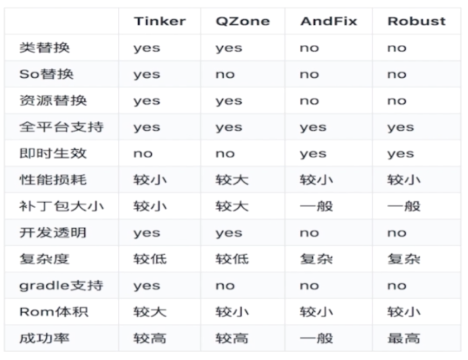
技术选型
- 需求是什么，需求是衡量一切的标准
- 能满足需求的条件下，学习成本最低的
- 学习成本 一样的情况下，优先选择大公司的方案
AndFix（已停止维护）
只能用于方法的替换
原理
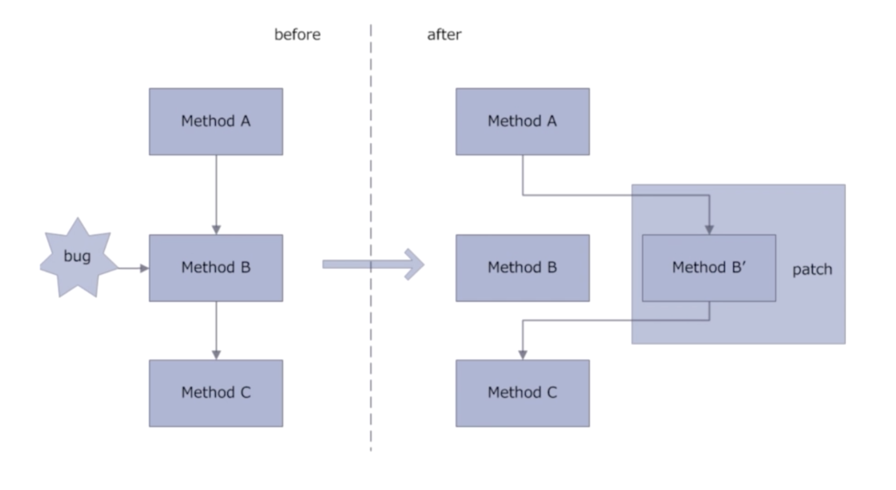
流程
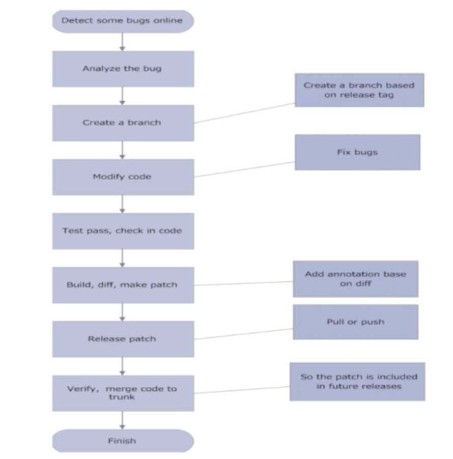
集成
compile 'com.alipay.euler:andfix:0.5.0@aar'
如果引入的库，仅仅是提供java代码的使用，那么在对应的module下compile即可。如果还有自定义脚本，需要在根gradle中，引入classpath
public class AndFixPatchManager {
private static AndFixPatchManager mInstance = null;
private static PatchManager mPatchManager = null;
public static AndFixPatchManager getInstance() {
if (mInstance == null) {
synchronized (AndFixPatchManager.class) {
if (mInstance == null) {
mInstance = new AndFixPatchManager();
}
}
}
return mInstance;
}
//初始化AndFix方法
public void initPatch(Context context) {
mPatchManager = new PatchManager(context);
mPatchManager.init(Utils.getVersionName(context));
mPatchManager.loadPatch();
}
//加载我们的patch文件
public void addPatch(String path) {
try {
if (mPatchManager != null) {
mPatchManager.addPatch(path);
}
} catch (Exception e) {
e.printStackTrace();
}
}
}
准备
- build一个有bug的old apk安装到手机
- 分析问题解决bug后，build一个new apk
代码
public class MainActivity extends AppCompatActivity {
private static final String FILE_END = ".apatch";
private String mPatchDir;
@Override
protected void onCreate(Bundle savedInstanceState) {
super.onCreate(savedInstanceState);
setContentView(R.layout.activity_main);
mPatchDir = getExternalCacheDir().getAbsolutePath()+"/apatch/";
Log.e("yly",mPatchDir);
File file = new File(mPatchDir);
if(file == null || !file.exists()){
file.mkdir();
}
}
public void createBug(View v){
print();
}
public void fixBug(View v){
AndFixPatchManager.getInstance().addPatch(getPatchName());
}
public void print(){
String error = "yly";
Log.e("yly",error);
}
public String getPatchName() {
return mPatchDir.concat("fix").concat(FILE_END);
}
}
patch生成
apkpatch-1.0.3文件夹
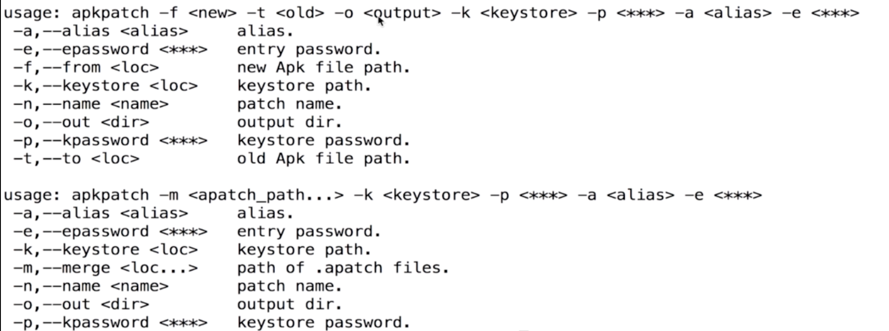
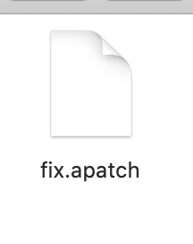
命令保存为脚本，复制命令，创建create_patch.sh，粘贴命令，前面加上sh
patch安装
将AndFix组件化
组件化步骤
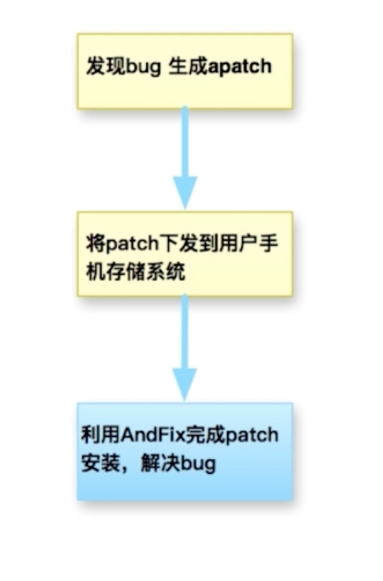
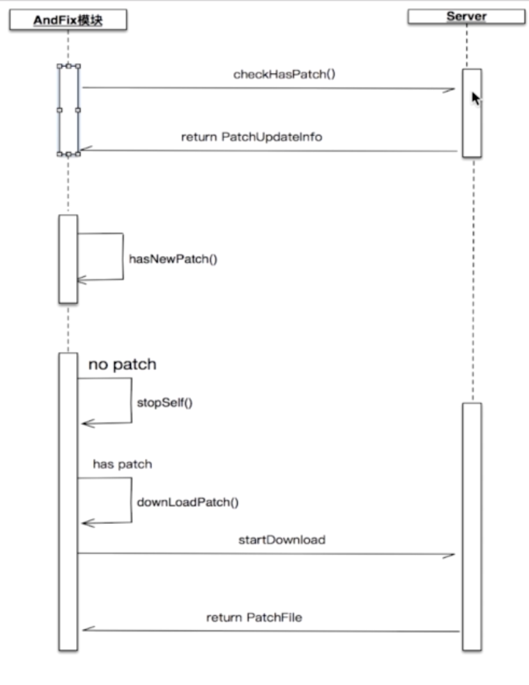
实现
public class AndFixService extends Service {
private static final String TAG = AndFixService.class.getSimpleName();
private static final String FILE_END = ".apatch";
private static final int UPDATE_PATCH = 0x02;
private static final int DOWNLOAD_PATCH = 0x01;
private String mPatchFileDir;
private String mPatchFile;
private Handler mHandler = new Handler() {
@Override
public void handleMessage(Message msg) {
switch (msg.what) {
case UPDATE_PATCH:
checkPatchUpdate();
break;
case DOWNLOAD_PATCH:
downloadPatch();
break;
}
}
};
@Nullable
@Override
public IBinder onBind(Intent intent) {
return null;
}
@Override
public void onCreate() {
super.onCreate();
init();
}
@Override
public int onStartCommand(Intent intent, int flags, int startId) {
mHandler.sendEmptyMessage(UPDATE_PATCH);
return START_NOT_STICKY;
}
//完成文件目录的构造
private void init() {
mPatchFileDir = getExternalCacheDir().getAbsolutePath() + "/apatch/";
File patchDir = new File(mPatchFileDir);
try {
if (patchDir == null || !patchDir.exists()) {
patchDir.mkdir();
}
} catch (Exception e) {
e.printStackTrace();
stopSelf();
}
}
private BasePatch mBasePatchInfo;
//检查服务器是否有patch文件
private void checkPatchUpdate() {
RequestCenter.requestPatchUpdateInfo(new DisposeDataListener() {
@Override
public void onSuccess(Object responseObj) {
mBasePatchInfo = (BasePatch) responseObj;
if (!TextUtils.isEmpty(mBasePatchInfo.data.downloadUrl)) {
//下载patch文件
mHandler.sendEmptyMessage(DOWNLOAD_PATCH);
} else {
stopSelf();
}
}
@Override
public void onFailure(Object reasonObj) {
stopSelf();
}
});
}
//完成patch文件的下载
private void downloadPatch() {
//初始化patch文件下载路径
mPatchFile = mPatchFileDir.concat(String.valueOf(System.currentTimeMillis())).
concat(FILE_END);
RequestCenter.downloadFile(mBasePatchInfo.data.downloadUrl, mPatchFile,
new DisposeDownloadListener() {
@Override
public void onProgress(int progrss) {
Log.d(TAG, "current progedss: " + progrss);
}
@Override
public void onSuccess(Object responseObj) {
//将我们下载好的patch文件添加到我们的andfix中
AndFixPatchManager.getInstance().addPatch(mPatchFile);
}
@Override
public void onFailure(Object reasonObj) {
stopSelf();
}
});
}
}
AndFix源码
入口：PatchManager（外观模式）
AndFixManager，bug修复方法替换由它完成
SortedSet
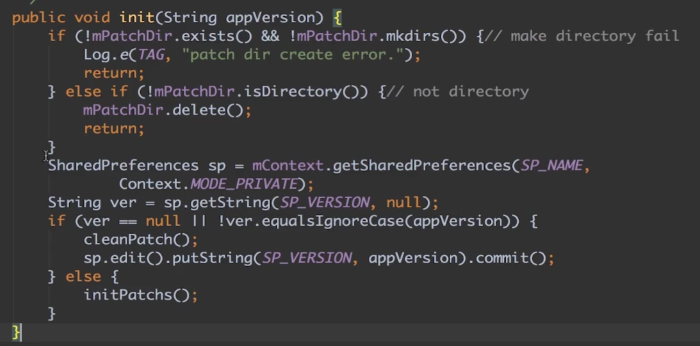
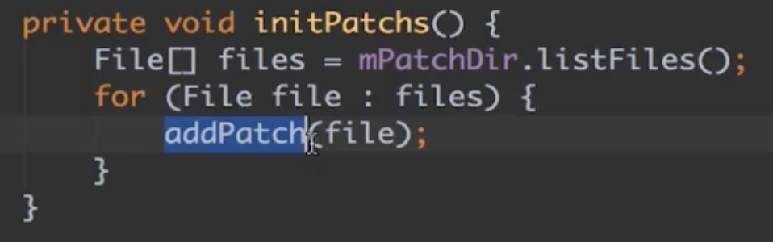
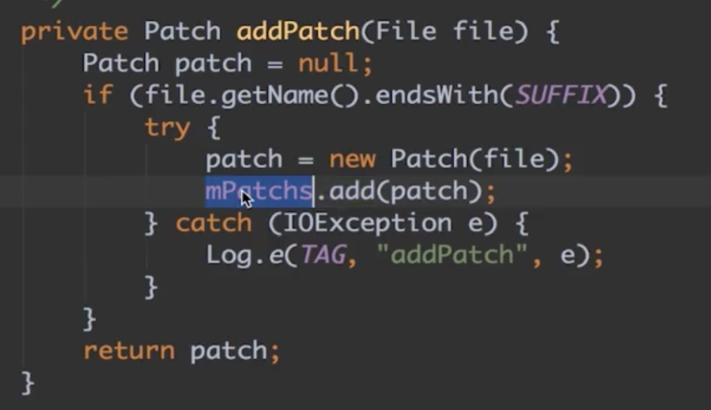
Patch类
Map<String,List
解析用工具生成的patch文件
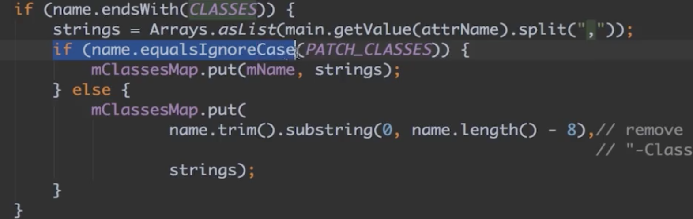
添加进来以后，可以调用下面方法获取这个patch文件中所有要修复的class的绝对路径
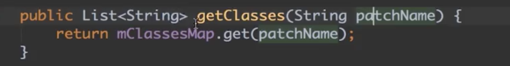
addPatch方法
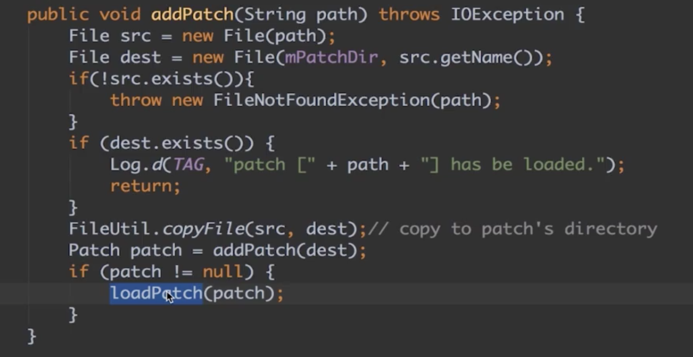
loadPatch方法（无参数的是遍历所有patch）
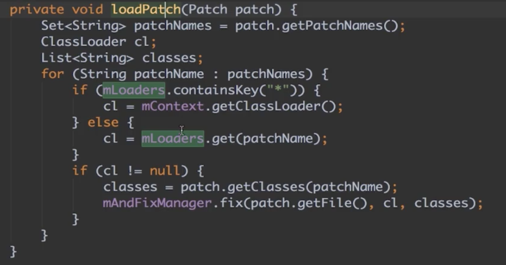
fix方法，遍历dexFile找到要修复的class
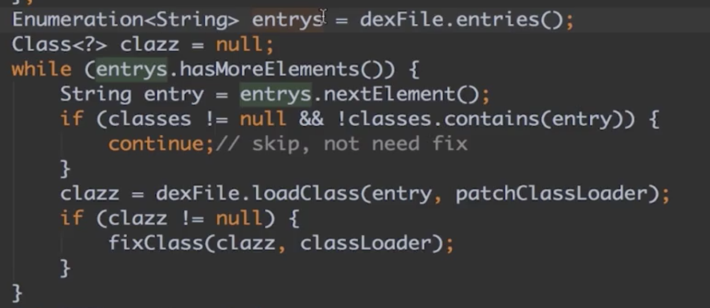
fixClass方法，反射找到所有的方法，通过注解找到哪些方法需要被替换
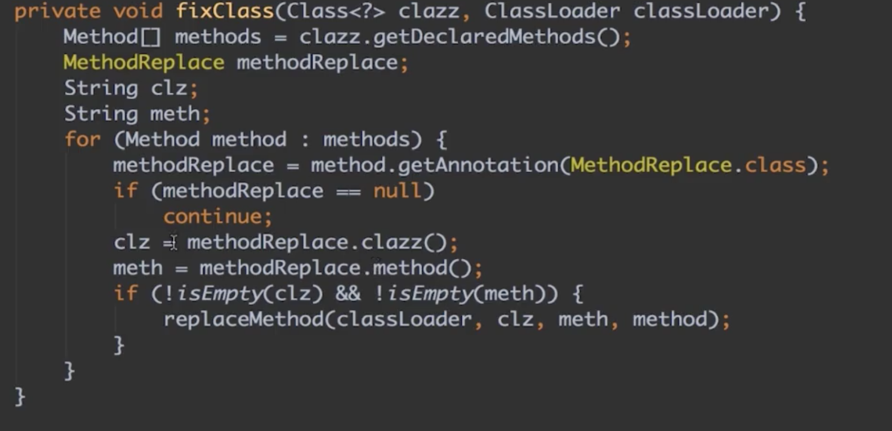
replaceMethod方法
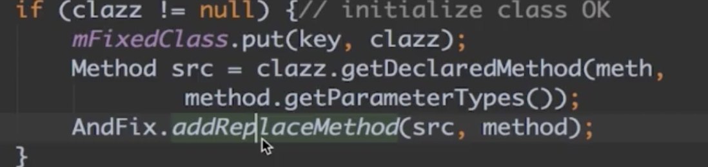
Native方法
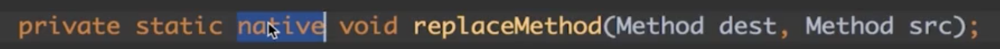
总结：首先将文件都转换成patch，将patch所有的class通过名字转换成class字节码，寻找字节码中被注解的方法，最终通过JNI完成方法的替换
优劣
- 原理简单、集成简单、使用简单、即时生效
- 只能修复方法级别的bug，极大的限制了使用场景
Tinker
核心原理
- 基于Android原生的classloader，开发了自己的classloader
- 基于Android原生的aapt，开发了自己的aapt
- 微信团队基于Dex文件的格式，研发了DexDiff算法
集成与初始化
- gradle中添加Tinker依赖
- 在代码中完成对Tinker初始化
patch生成方式
- 命令行的方式
- gradle插件的方式
命令行的方式
1.修改tinker_config里的参数
修改application
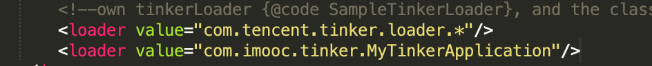
修改签名
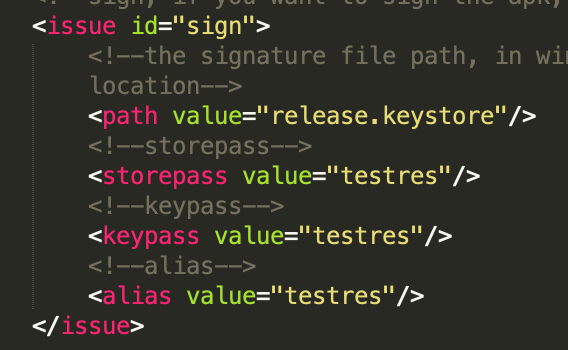
2.执行命令
java -jar tinker-patch-cli.jar -old old.apk -new new.apk -config tinker_config.xml -out output_path
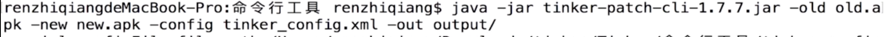
gradle插件的方式
def bakPath = file("${buildDir}/bakApk/") //指定基准文件存放位置
ext {
tinkerEnable = true
tinkerOldApkPath = "${bakPath}/app-0511-12-36-20"
tinkerID = "1.0"
tinkerApplyMappingPath = "${bakPath}/app-0511-12-36-20"
tinkerApplyResourcePath = "${bakPath}/app-0511-12-36-20"
tinkerBuildFlavorDirectory = "${bakPath}/app-0511-12-36-20"
}
def buildWithTinker() {
return ext.tinkerEnable
}
def getOldApkPath() {
return ext.tinkerOldApkPath
}
def getApplyMappingPath() {
return ext.tinkerApplyMappingPath
}
def getApplyResourceMappingPath() {
return ext.tinkerApplyResourcePath
}
def getTinkerIdValue() {
return ext.tinkerID
}
def getTinkerBuildFlavorDirectory(){
return ext.tinkerBuildFlavorDirectory
}
if (buildWithTinker()) {
//启用tinker
apply plugin: 'com.tencent.tinker.patch'
//所有tinker相关的参数配置
tinkerPatch {
oldApk = getOldApkPath() //指定old apk文件径
ignoreWarning = false //不忽略tinker的警告，有则中止patch文件的生成
useSign = true //强制patch文件也使用签名
tinkerEnable = buildWithTinker(); //指定是否启用tinker
buildConfig {
applyMapping = getApplyMappingPath() //指定old apk打包时所使用的混淆文件
applyResourceMapping = getApplyResourceMappingPath() //指定old apk的资源文件
tinkerId = getTinkerIdValue() //指定TinkerID
keepDexApply = false
}
dex {
dexMode = "jar" //jar、raw
pattern = ["classes*.dex", "assets/secondary-dex-?.jar"] //指定dex文件目录
loader = ["com.imooc.tinker.MyTinkerApplication"] //指定加载patch文件时用到的类
}
lib {
pattern = ["libs/*/*.so"]
}
res {
pattern = ["res/*", "assets/*", "resources.arcs", "AndoridManifest.xml"] //指定tinker可以修改的资源路径
ignoreChange = ["assets/sample_meta.txt"] //指定不受影响的资源路径
largeModSize = 100 //资源修改大小默认值
}
//patch相关信息
packageConfig {
configField("patchMessage", "fix the 1.0 version's bugs")
configField("patchVersion", "1.0")
}
}
//判断当前项目是否配置多渠道
List<String> flavors = new ArrayList<>();
project.android.productFlavors.each { flavor ->
flavors.add(flavor.name)
}
boolean hasFlavors = flavors.size() > 0
/**
* 复制基准包和其它必须文件到指定目录
*/
android.applicationVariants.all { variant ->
/**
* task type, you want to bak
*/
def taskName = variant.name
def date = new Date().format("MMdd-HH-mm-ss")
tasks.all {
if ("assemble${taskName.capitalize()}".equalsIgnoreCase(it.name)) {
it.doLast {
copy {
def fileNamePrefix = "${project.name}-${variant.baseName}"
def newFileNamePrefix = hasFlavors ? "${fileNamePrefix}" : "${fileNamePrefix}-${date}"
def destPath = hasFlavors ? file("${bakPath}/${project.name}-${date}/${variant.flavorName}") : bakPath
from variant.outputs.outputFile
into destPath
rename { String fileName ->
fileName.replace("${fileNamePrefix}.apk", "${newFileNamePrefix}.apk")
}
from "${buildDir}/outputs/mapping/${variant.dirName}/mapping.txt"
into destPath
rename { String fileName ->
fileName.replace("mapping.txt", "${newFileNamePrefix}-mapping.txt")
}
from "${buildDir}/intermediates/symbols/${variant.dirName}/R.txt"
into destPath
rename { String fileName ->
fileName.replace("R.txt", "${newFileNamePrefix}-R.txt")
}
}
}
}
}
}
/**
* 多渠道
*/
project.afterEvaluate {
if (hasFlavors) {
task(tinkerPatchAllFlavorRelease) {
group = 'tinker'
def originOldPath = getTinkerBuildFlavorDirectory()
for (String flavor : flavors) {
def tinkerTask = tasks.getByName("tinkerPatch${flavor.capitalize()}Release")
dependsOn tinkerTask
def preAssembleTask = tasks.getByName("process${flavor.capitalize()}ReleaseManifest")
preAssembleTask.doFirst {
String flavorName = preAssembleTask.name.substring(7, 8).toLowerCase() + preAssembleTask.name.substring(8, preAssembleTask.name.length() - 15)
//拼凑名字
project.tinkerPatch.oldApk = "${originOldPath}/${flavorName}/${project.name}-${flavorName}-release.apk"
project.tinkerPatch.buildConfig.applyMapping = "${originOldPath}/${flavorName}/${project.name}-${flavorName}-release-mapping.txt"
project.tinkerPatch.buildConfig.applyResourceMapping = "${originOldPath}/${flavorName}/${project.name}-${flavorName}-release-R.txt"
}
}
}
task(tinkerPatchAllFlavorDebug) {
group = 'tinker'
def originOldPath = getTinkerBuildFlavorDirectory()
for (String flavor : flavors) {
def tinkerTask = tasks.getByName("tinkerPatch${flavor.capitalize()}Debug")
dependsOn tinkerTask
def preAssembleTask = tasks.getByName("process${flavor.capitalize()}DebugManifest")
preAssembleTask.doFirst {
String flavorName = preAssembleTask.name.substring(7, 8).toLowerCase() + preAssembleTask.name.substring(8, preAssembleTask.name.length() - 13)
project.tinkerPatch.oldApk = "${originOldPath}/${flavorName}/${project.name}-${flavorName}-debug.apk"
project.tinkerPatch.buildConfig.applyMapping = "${originOldPath}/${flavorName}/${project.name}-${flavorName}-debug-mapping.txt"
project.tinkerPatch.buildConfig.applyResourceMapping = "${originOldPath}/${flavorName}/${project.name}-${flavorName}-debug-R.txt"
}
}
}
}
}
}
组件化
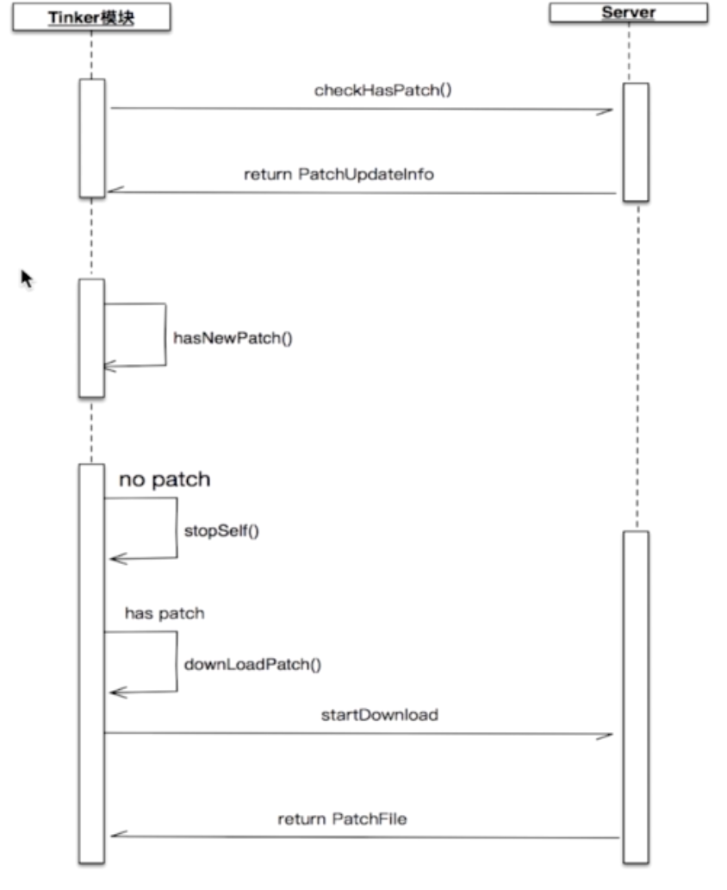
Tinker进阶
如何支持多渠道打包
app/build.gradle下的android{}
//真正的多渠道脚本支持
productFlavors {
googleplayer {
manifestPlaceholders = [UMENG_CHANNEL_VALUE: "googleplayer"]
}
baidu {
manifestPlaceholders = [UMENG_CHANNEL_VALUE: "baidu"]
}
productFlavors.all {
flavor -> flavor.manifestPlaceholders = [UMENG_CHANNEL_VALUE: name]
}
}
脚本看上面的“gradle插件的方式”
如何自定义Tinker行为
自定义PatchListener监听patch receiver事件
DefaultPatchListener的patchCheck方法
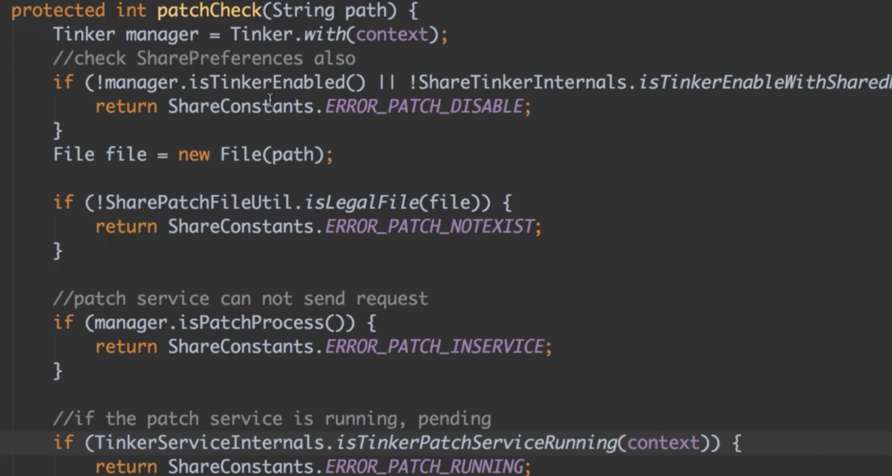
//1.较验patch文件是否合法 2.启动Service去安装patch文件
public class CustomPatchListener extends DefaultPatchListener {
private String currentMD5;
public void setCurrentMD5(String md5Value) {
this.currentMD5 = md5Value;
}
public CustomPatchListener(Context context) {
super(context);
}
//拓展MD5校验
@Override
protected int patchCheck(String path) {
//patch文件ms5较验
if (!Utils.isFileMD5Matched(path, currentMD5)) {
return ShareConstants.ERROR_PATCH_DISABLE;
}
return super.patchCheck(path);
}
}
自定义TinkerResultService改变patch安装成功后行为
DefaultTinkerResultService -> AbstractResultService（onPatchResult） -> IntentService
DefaultTinkerResultService的onPatchResult方法
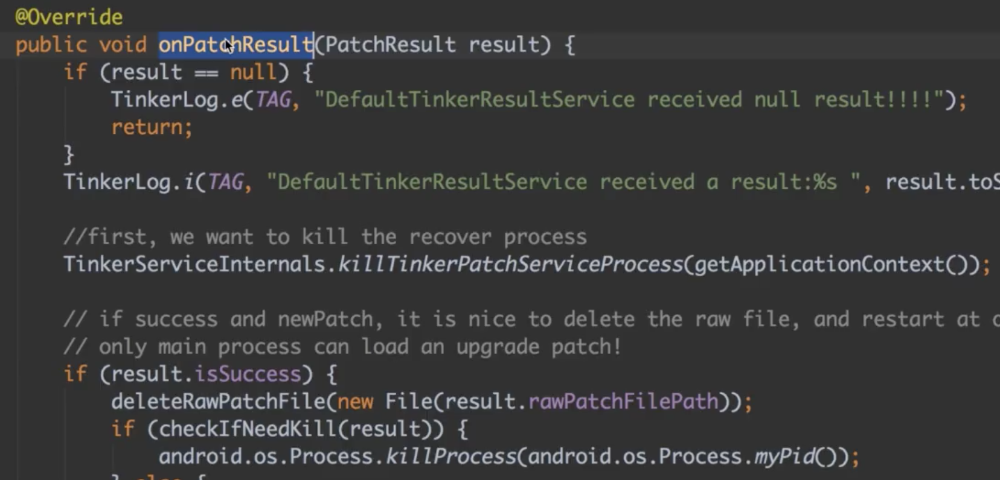
//本类的作用：决定在patch安装完以后的后续操作，默认实现是杀进程
public class CustomResultService extends DefaultTinkerResultService {
private static final String TAG = "Tinker.SampleResultService";
//返回patch文件的最终安装结果
@Override
public void onPatchResult(PatchResult result) {
if (result == null) {
TinkerLog.e(TAG, "DefaultTinkerResultService received null result!!!!");
return;
}
TinkerLog.i(TAG, "DefaultTinkerResultService received a result:%s ", result.toString());
//first, we want to kill the recover process
TinkerServiceInternals.killTinkerPatchServiceProcess(getApplicationContext());
// if success and newPatch, it is nice to delete the raw file, and restart at once
// only main process can load an upgrade patch!
if (result.isSuccess) {
deleteRawPatchFile(new File(result.rawPatchFilePath));
}
}
}
自定义行为后修改初始化方法
mPatchListener = new CustomPatchListener(getApplicationContext());
//补丁文件加载过程中可能出现所有异常的监听
LoadReporter loadReporter = new DefaultLoadReporter(getApplicationContext());
//合成阶段可能出现所有异常的监听
PatchReporter patchReporter = new DefaultPatchReporter(getApplicationContext());
AbstractPatch upgradePatchProcessor = new UpgradePatch();
TinkerInstaller.install(applicationLike,
loadReporter,
patchReporter,
mPatchListener,
CustomResultService.class,
upgradePatchProcessor); //完成Tinker初始化
修改完成Patch文件的加载方法
public static void loadPatch(String path, String md5Value) {
if (Tinker.isTinkerInstalled()) {
mPatchListener.setCurrentMD5(md5Value);
TinkerInstaller.onReceiveUpgradePatch(getApplicationContext(), path);
}
}
Tinker源码
1.TinkerInstaller（外观模式） 对 Tinker 的包装
2.Tinker（构建+单例）
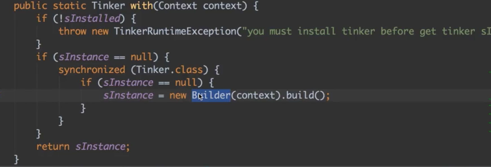
3.TinkerInstaller.onReceiveUpgradePatch -> PatchListener接口里的onPatchReceiver -> DefaultPatchListener（onPatchReceiver）
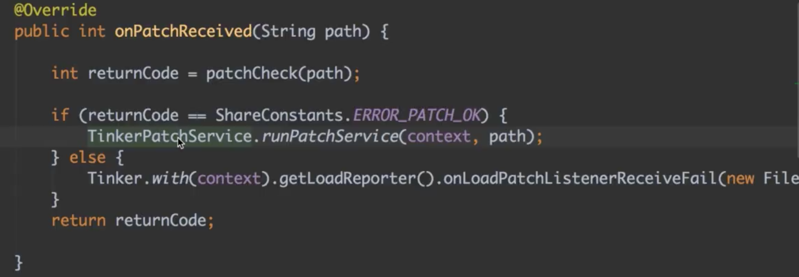
TinkerPatchService
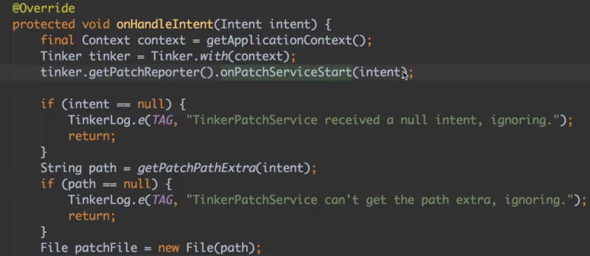
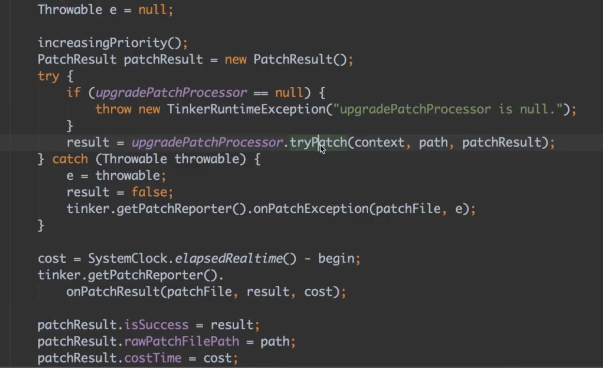
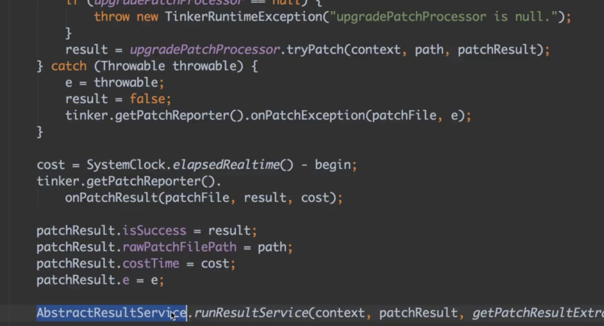
处理完毕后调用AbstractResultService（patch安装成功后行为）
处理patch文件（tryPatch） -> AbstractPatch -> UpgradePatch
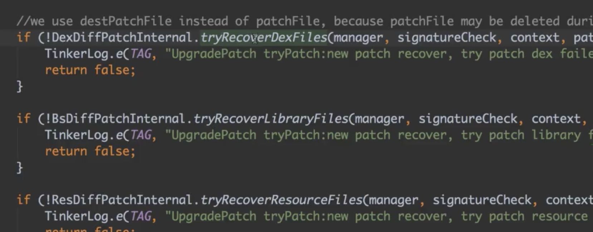
tryRecoverDexFiles（dex文件合并） -> DexPatchApplier
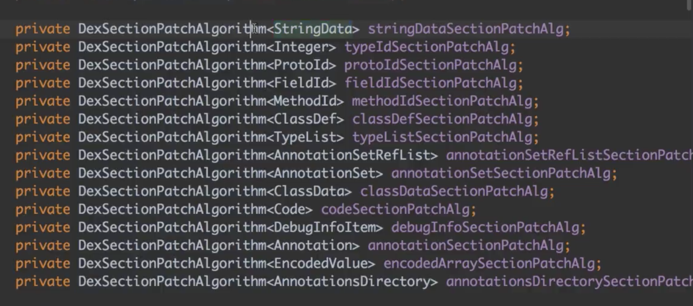
通过这些算法计算每个区域的偏移量
注意问题
- 目前版本(1.7.7)还不支持加固，以后的版本应该会支持
- 不支持修改AndroidManifest.xml
- 不支持新增四大组件、transition动画、桌面图标等
- 部分三星Android-21机型不兼容